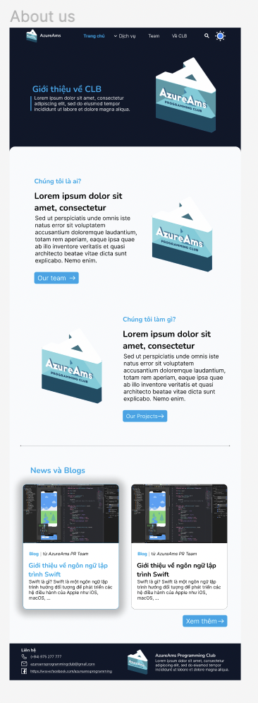

Learn CSS
Padding
Margin
Position
Align
Trình bày lại giao diện không của hình ảnh sau:

Yêu cầu:
Button phải bấm được và khi kéo chuột vào button thì sẽ đổi màu or phóng to ra
Ảnh clb có thể được thay bằng ảnh khác tuỳ ý muốn
DL: đến thứ 3 ngày 3 tháng 4
Click Me